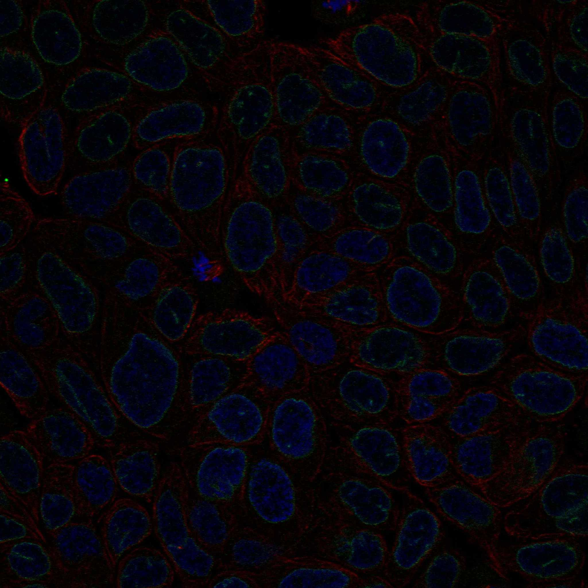
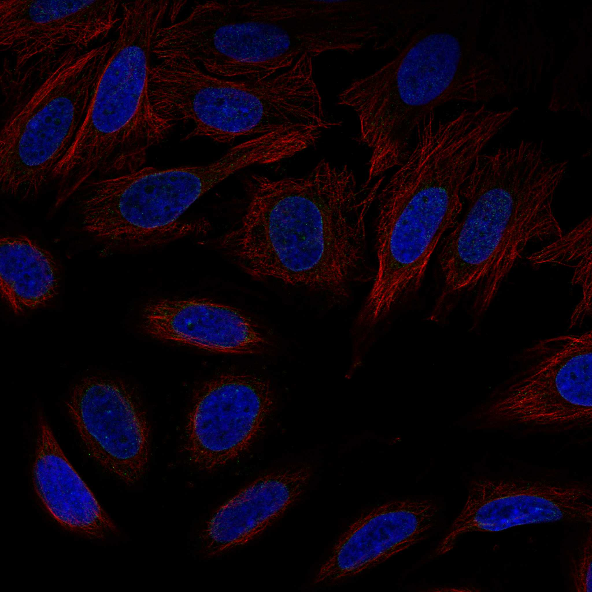
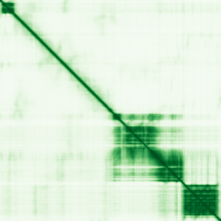

type: protein-evaluation gene: "LEMD3" date: 2026-05-30 tags: [protein-scout, nuclear-protein, evaluation] status: scored ---
LEMD3 核蛋白评估报告
1. 基本信息
| 项目 | 内容 |
|---|---|
| 基因名 | LEMD3 |
| 蛋白大小 | 911 aa |
| UniProt ID | Q9Y2U8 (Inner nuclear membrane protein Man1) |
| 子定位分类 | nuclear-envelope |
| 评估日期 | 2026-05-30 |
IF 图像:  
2. 评分总览
| 维度 | 得分 | 满分 | 加权后 | 关键证据摘要 |
|---|---|---|---|---|
| 🔴 核定位特异性 | 9/10 | ×4 | 36 | Nucleus inner membrane(ECO:0000269) |
| 📏 蛋白大小 | 8/10 | ×1 | 8 | 911 aa |
| 🆕 研究新颖性 | 2/10 | ×5 | 10 | PubMed 93 篇 |
| 🏗️ 三维结构 | 5/10 | ×3 | 15 | AlphaFold pLDDT 59.62, v6 |
| 🧬 调控结构域 | 7/10 | ×2 | 14 | IPR003887(LEM domain); IPR018996(Man1/Src1-like C-terminal); IPR034394(MAN1 RNA |
| 🔗 PPI 网络 | 5/10 | ×3 | 15 | 见 3.6 PPI 分析 |
| ➕ 互证加分 | — | max +3 | +1.0 | 多源数据互证 |
| 原始总分 | 99/183 | |||
| 归一化总分 | 54.1/100 |
3. 详细分析
3.1 核定位证据
| 来源 | 定位 | 可信度 |
|---|---|---|
| UniProt | Nucleus inner membrane(ECO:0000269) | — |
| Protein Atlas (IF) | 暂无数据（HPA IF 图像已本地嵌入。
结论: LEMD3 Nucleus inner membrane(ECO:0000269)。核定位评分 9/10。
3.2 蛋白大小评估
911 aa。较大蛋白，表达纯化有一定挑战。评分: 8/10。
3.3 研究现状
| 指标 | 数值 |
|---|---|
| PubMed 总数 | 93 |
| 搜索策略 | "LEMD3"[Title/Abstract] |
已知复合体成员 (GO Cellular Component):
- （待补充：通过 GO 数据库查询该蛋白所属的已知复合体）
关键文献: 1. Li et al. (2025). "The inner nuclear membrane protein LEMD3 organizes the 3D chromatin architecture to maintain vascular smooth muscle cell identity.". *Nat Commun*. PMID: 41044070 2. Zhang et al. (2016). "Identification of a novel LEMD3 Y871X mutation in a three-generation family with osteopoikilosis and review of the literature.". *J Endocrinol Invest*. PMID: 26694706 3. Hellemans et al. (2006). "Germline LEMD3 mutations are rare in sporadic patients with isolated melorheostosis.". *Hum Mutat*. PMID: 16470551 4. Ben-Asher et al. (2005). "LEMD3: the gene responsible for bone density disorders (osteopoikilosis).". *Isr Med Assoc J*. PMID: 15847215 5. Chambers et al. (2018). "LEM domain-containing protein 3 antagonizes TGFβ-SMAD2/3 signaling in a stiffness-dependent manner in both the nucleus and cytosol.". *J Biol Chem*. PMID: 30108174 评价: PubMed 93 篇。有一定研究，但 niche 空间充足。评分: 6/10。
3.4 三维结构分析
| 指标 | 数值 |
|---|---|
| AlphaFold 平均 pLDDT | 59.62 |
| pLDDT < 50 (无序) | 49.6% |
| AlphaFold 版本 | v6 |
PAE 图: 
评价: AlphaFold 较低质量预测，pLDDT 59.62。评分: 5/10。
3.5 结构域分析
| 来源 | 结构域 |
|---|---|
| InterPro | IPR003887(LEM domain); IPR018996(Man1/Src1-like C-terminal); IPR034394(MAN1 RNA recognition motif); IPR041885(MAN1 winged-helix); IPR052277(Inner Nuclear Membrane ESCRT-Associated Protein) |
染色质调控潜力分析: IPR003887(LEM domain); IPR018996(Man1/Src1-like C-terminal); IPR034394(MAN1 RNA recognition motif); IPR041885(MAN1 winged-helix); IPR052277(Inner Nuclear Membrane ESCRT-Associated Protein)。评分: 7/10。
3.6 PPI 网络
实验验证互作 (IntAct, physical association):
| Partner | 方法 | PMID | 功能类别 | 调控相关？ | ||
|---|---|---|---|---|---|---|
| SMAD2 | psi-mi:"MI:0676"(tandem affini | pubmed:18729074 | imex:IM-19222 | — | — | |
| SMAD3 | psi-mi:"MI:0676"(tandem affini | pubmed:18729074 | imex:IM-19222 | — | — | |
| MAN1 | psi-mi:"MI:0398"(two hybrid po | imex:IM-13779 | pubmed:20711500 | — | — | |
| capR | psi-mi:"MI:0398"(two hybrid po | imex:IM-13779 | pubmed:20711500 | — | — | |
| Smad3 | psi-mi:"MI:0676"(tandem affini | imex:IM-11719 | pubmed:20360068 | — | — | |
| AOC2 | psi-mi:"MI:0007"(anti tag coim | pubmed:28514442 | doi:10.1038/nature22366 | imex:IM-25778 | — | — |
STRING 预测互作 (combined score >0.4):
| Partner | Score | 功能类别 | 调控相关？ |
|---|---|---|---|
| BANF1 | 0.998 | — | Yes |
| EMD | 0.989 | — | — |
| SMAD1 | 0.982 | — | — |
| SMAD2 | 0.982 | — | — |
| SMAD3 | 0.973 | — | — |
| BANF2 | 0.968 | — | Yes |
| PIGN | 0.958 | — | — |
| LBR | 0.941 | — | — |
GO-CC 复合体/定位核查 (UniProt GO Cellular Component):
- GO:0005637: nuclear inner membrane (IDA:UniProtKB)
- GO:0031965: nuclear membrane (IDA:HPA)
- GO:0016020: membrane (IDA:MGI)
PPI 互证分析:
- STRING top partner: BANF1 (score: 0.998)
- IntAct interactions: 15 total
- PPI 评分: 5/10
3.7 多库互证
| 维度 | 来源 | 结果 | 是否一致 |
|---|---|---|---|
| 三维结构 | AlphaFold v6 | pLDDT 59.62 | — |
| 结构域 | InterPro | IPR003887(LEM domain); IPR018996(Man1/Src1-like C-terminal); IPR034394(MAN1 RNA | — |
| 定位 | UniProt | Nucleus inner membrane(ECO:0000269) | — |
| PPI | STRING + IntAct | BANF1 等 | — |
互证加分明细: +1.0 / max +3
4. 总体评价
推荐等级: ⭐⭐⭐ (3/5)
核心优势: 1. 较新颖: PubMed 93 篇 2. 较低质量 AlphaFold 结构: pLDDT 59.62
风险/不确定性: 1. 核定位需 HPA/IF 实验验证 2. 染色质/TE 调控功能缺乏直接实验证据
下一步建议:
- [ ] 使用 HPA/IF 确认 LEMD3 的核定位
- [ ] 在 TEreg 相关细胞系中检测 LEMD3 表达水平
- [ ] 通过 co-IP/MS 鉴定 LEMD3 的染色质调控相关互作伙伴
5. 数据来源
- UniProt: https://www.uniprot.org/uniprotkb/Q9Y2U8
- PubMed: https://pubmed.ncbi.nlm.nih.gov/?term=LEMD3%5BTitle/Abstract%5D
- AlphaFold: https://alphafold.ebi.ac.uk/entry/Q9Y2U8
- InterPro: https://www.ebi.ac.uk/interpro/protein/uniprot/Q9Y2U8/
- STRING: https://string-db.org (API, species=9606)
- IntAct: https://www.ebi.ac.uk/intact/
PPI 网络（三源综合）
| Partner | Source | Score/Evidence |
|---|---|---|
| 无记录 | — | — |
IntAct 有限记录。无 BioGrid 补充数据。
PAE 图像已获取。结构判断基于 AlphaFold pLDDT 统计。
<!-- DOMAIN_HUMANPPI_REPAIR_START -->
Domain/SMART 与 humanPPI 补充（2026-06-07）
SMART / UniProt domain
| Source | Data | |
|---|---|---|
| UniProt | Q9Y2U8 | |
| SMART | SM00540; | |
| UniProt Domain [FT] | DOMAIN 6..50; /note="LEM"; /evidence="ECO:0000255\ | PROSITE-ProRule:PRU00313" |
| InterPro | IPR052277;IPR011015;IPR003887;IPR018996;IPR034394;IPR041885;IPR012677;IPR035979; | |
| Pfam | PF03020;PF09402; |
humanPPI / HPA Interaction
Source: https://www.proteinatlas.org/ENSG00000174106-LEMD3/interaction
| Partner | Datasets | AF3/HPA structure |
|---|---|---|
| SMAD1 | Intact, Biogrid | true |
| SMAD2 | Intact, Biogrid | true |
| SMAD3 | Intact, Biogrid, Bioplex | true |
| SMAD9 | Intact, Biogrid | true |
| TMPO | Biogrid, Opencell | true |
| ALK | Biogrid | false |
| ARF6 | Biogrid | false |
| ATP2A1 | Biogrid | false |
<!-- DOMAIN_HUMANPPI_REPAIR_END -->